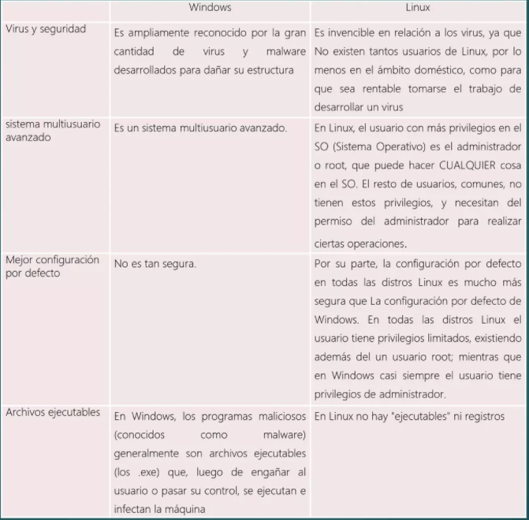

En este artículo exploraremos la administración de dispositivos en las últimas versiones de los sistemas operativos Linux y Windows.
Manejo de Archivos
Para crear una máquina virtual con Oracle VM VirtualBox:
Para crear una máquina virtual con Oracle VM VirtualBox:
VMware Workstation es una solución comercial para la virtualización que ofrece características avanzadas para la gestión y configuración de máquinas virtuales.
QEMU es un emulador de procesador y un virtualizador que ofrece flexibilidad para ejecutar sistemas operativos invitados sobre diferentes plataformas host.
La seguridad en dispositivos implica medidas como el uso de antivirus, firewalls, actualizaciones regulares del sistema operativo, autenticación multifactor, y cifrado de datos. Cada sistema operativo tiene sus propias herramientas y configuraciones para mejorar la seguridad.
Se puede diseñar un gráfico que muestre diferentes niveles de protección y seguridad de dispositivos, desde medidas básicas hasta avanzadas como cifrado de disco completo y políticas de seguridad corporativa.
